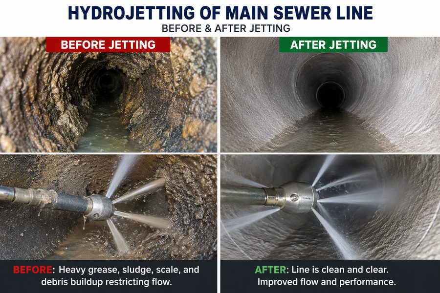
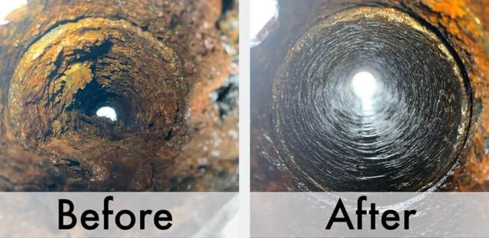
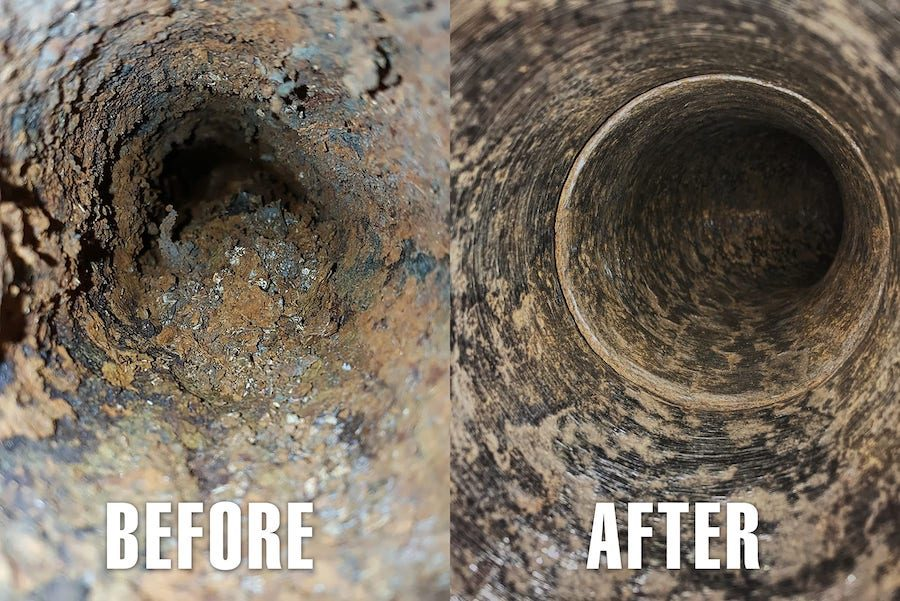
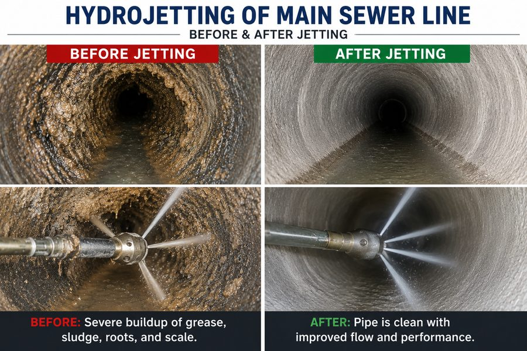
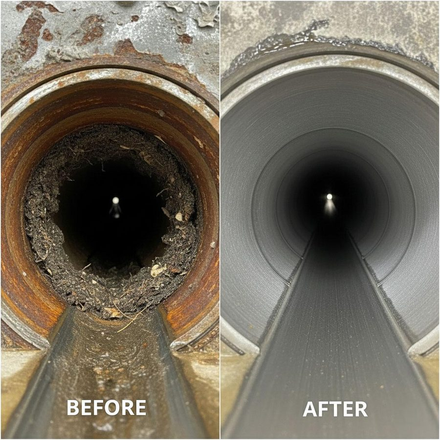

Hydro jetting is the most powerful solution available for clearing stubborn drain and sewer line blockages. Unlike mechanical snaking, which punches a temporary path through a clog, hydro jetting uses pressurized water streams — up to 4,000 PSI — to completely scour pipe walls clean. Grease buildup, tree roots, mineral scale, and years of accumulated debris are washed away, not just pushed aside.
The result is a pipe that flows freely and stays clear far longer than any other cleaning method. At Jet Force, we recommend hydro jetting for commercial kitchens, recurring residential blockages, older drain systems, and any time a camera inspection reveals significant wall buildup inside the line.




How Main Sewer Line Jetting Works
Every hydro jetting job begins with a camera inspection to assess pipe condition and confirm the line can safely handle high pressure. Once we understand what we are dealing with, a flexible hose fitted with a specialized rotating nozzle is inserted into the drain opening.
Water is forced through at extreme pressure — blasting forward to clear the blockage while backward-facing jets simultaneously scrub the full circumference of the pipe wall. The nozzle is worked methodically through the entire line, leaving the interior thoroughly cleaned from wall to wall. A second camera pass confirms the pipe is fully clear before we leave the job.
Signs You Need This Service
- Recurring drain backups even after repeated snaking
- Multiple slow drains throughout the property at the same time
- Gurgling or bubbling sounds from toilets or floor drains
- Sewage odors rising from drains or in the yard
- Commercial kitchen lines with persistent grease accumulation
- Tree roots confirmed inside your sewer lateral by camera
Why Choose Jet Force
When you call Jet Force for hydro jetting, you get an honest assessment first. If we inspect the line and standard snaking is all you need, we will tell you — and charge you accordingly. We never upsell services you do not need. Our certified technicians carry full liability coverage, respond 24/7 for emergencies, and require no down payment before work begins.
We serve homeowners, restaurants, apartment buildings, and commercial facilities across the Denver metro. Every hydro jetting job includes a post-service camera report so you can see exactly what was cleared and confirm your pipe is in good shape going forward.
Frequently Asked Questions
